Canvas
Low-level graphics API for rendering pixels in the browser
Canvas is commonly used for
Canvas is commonly used for
animations & visual effects
Canvas is commonly used for
interactive data visualizations and charts
Canvas is commonly used for
drawing tools and graphic editors
Canvas is commonly used for
3D graphics
Canvas is commonly used for
2D games
Basic usage
how drawing works in practice
HTML Canvas — low-level rendering API
const canvas = document.createElement('canvas');
const context = canvas.getContext('2d');
- <canvas> is a single HTML element
- it renders pixels, not DOM nodes
- all drawing is done via JavaScript
Rendering Context
const canvas = document.createElement('canvas');
const context = canvas.getContext('2d');
- all rendering goes through a context
- the context defines available drawing capabilities
Context types
const canvas = document.createElement('canvas');
const context = canvas.getContext('2d');
- 2d — shapes, text, images, animations
- webgl / webgl2 — 3D graphics, GPU rendering
- bitmaprenderer — specific low-level use cases
drawing model
- canvas uses a path-based drawing model
- paths are built step by step
- rendering happens only on fill or stroke
drawing primitives
- canvas is based on primitive operations
- complex graphics are built from simple shapes
rectangle
const canvas = document.createElement("canvas");
const ctx = canvas.getContext("2d");
ctx.beginPath(); // start a new path
ctx.rect(10, 20, 150, 100); // add a rectangle to the current path
ctx.fillStyle ='blue'; // changing the fill color of a shape
ctx.fill(); // render the path

rectangle
const canvas = document.createElement("canvas");
const ctx = canvas.getContext("2d");
ctx.beginPath(); // start a new path
ctx.rect(10, 20, 150, 100); // add a rectangle to the current path
ctx.fillStyle = 'blue'; // changing the fill color of a shape
ctx.fill(); // render the path
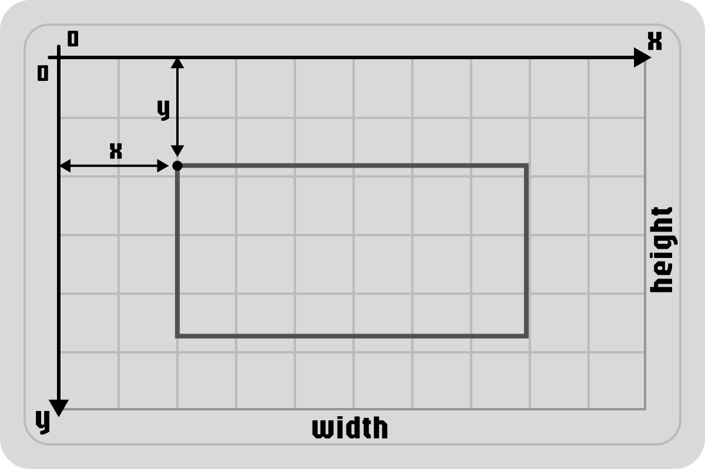
rectangle
const canvas = document.createElement("canvas");
const ctx = canvas.getContext("2d");
ctx.beginPath(); // start a new path
ctx.rect(10, 20, 150, 100); // add a rectangle to the current path
ctx.fillStyle ='blue'; // changing the fill color of a shape
ctx.fill(); // render the path
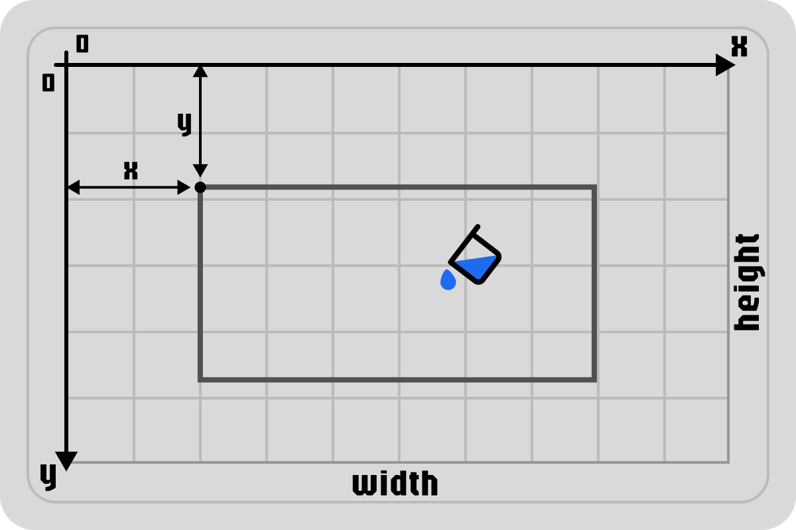
rectangle
const canvas = document.createElement("canvas");
const ctx = canvas.getContext("2d");
ctx.beginPath(); // start a new path
ctx.rect(10, 20, 150, 100); // add a rectangle to the current path
ctx.fillStyle = 'blue'; // changing the fill color of a shape
ctx.fill(); // render the path
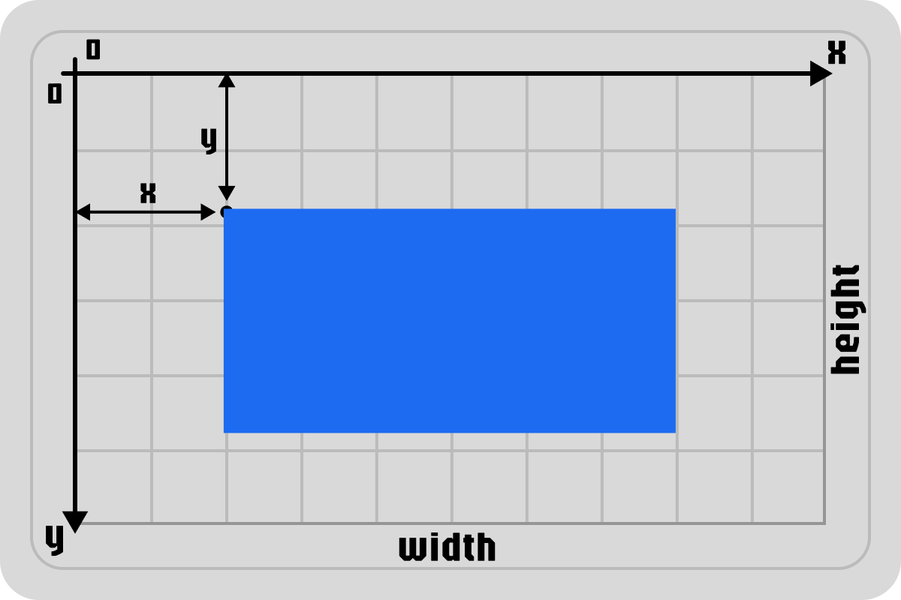
arc
const canvas = document.createElement("canvas");
const ctx = canvas.getContext("2d");
ctx.beginPath();
ctx.arc(100, 75, 50, 0, 1.5 * Math.PI);
ctx.lineWidth = 2;
ctx.strokeStyle ='blue';
ctx.stroke();
arc
const canvas = document.createElement("canvas");
const ctx = canvas.getContext("2d");
ctx.beginPath();
ctx.arc(100, 75, 50, 0, 1.5 * Math.PI);
ctx.lineWidth = 2;
ctx.strokeStyle = 'blue';
ctx.stroke();
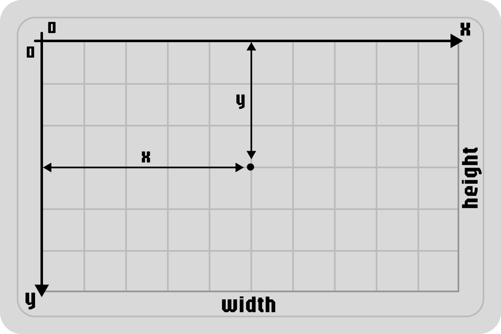
arc
const canvas = document.createElement("canvas");
const ctx = canvas.getContext("2d");
ctx.beginPath();
ctx.arc(100, 75, 50, 0, 1.5 * Math.PI);
ctx.lineWidth = 2;
ctx.strokeStyle = 'blue';
ctx.stroke();
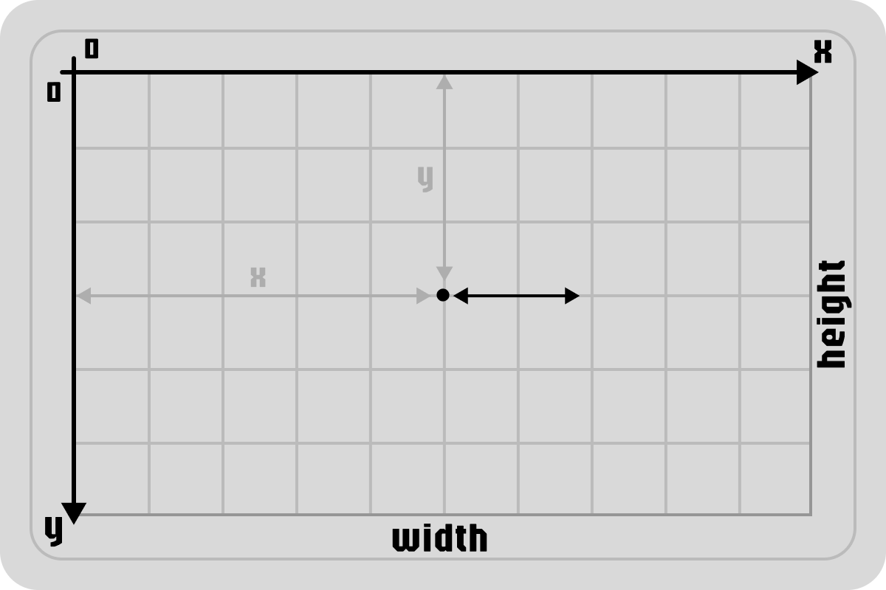
arc
const canvas = document.createElement("canvas");
const ctx = canvas.getContext("2d");
ctx.beginPath();
ctx.arc(100, 75, 50, 0, 1.5 * Math.PI);
ctx.lineWidth = 2;
ctx.strokeStyle = 'blue';
ctx.stroke();
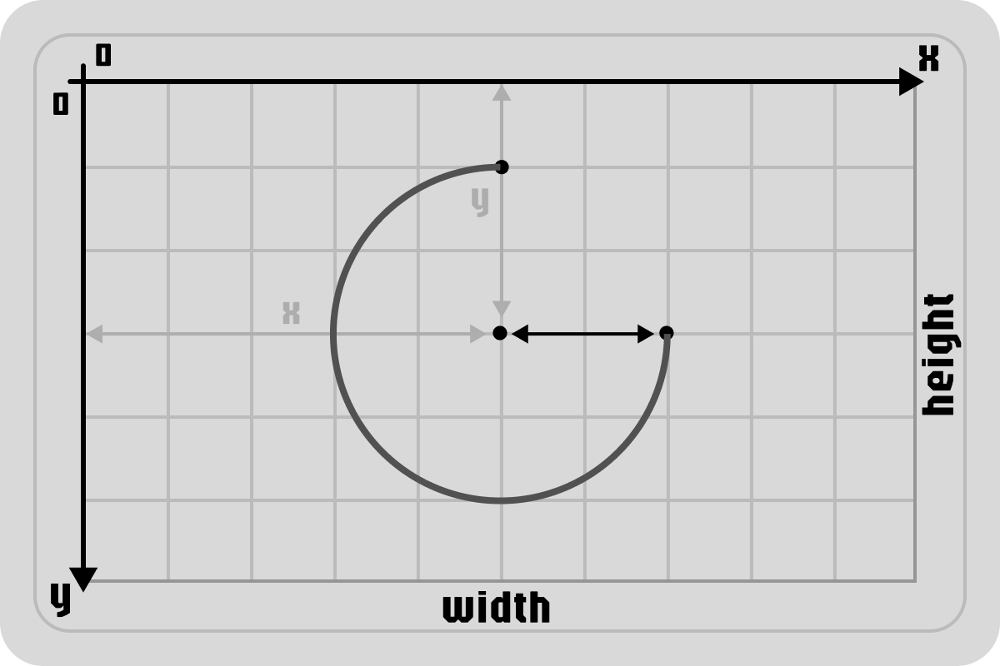
arc
const canvas = document.createElement("canvas");
const ctx = canvas.getContext("2d");
ctx.beginPath();
ctx.arc(100, 75, 50, 0, 1.5 * Math.PI);
ctx.lineWidth = 2;
ctx.strokeStyle = 'blue';
ctx.stroke();
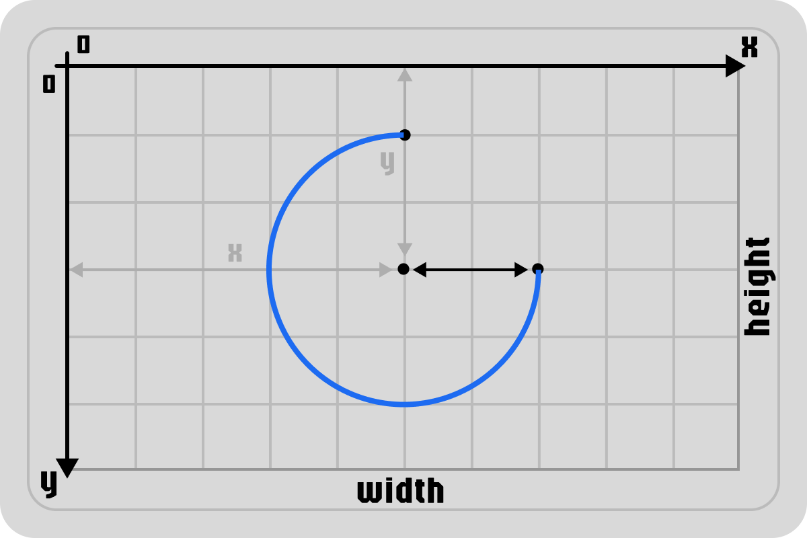
line
const canvas = document.createElement("canvas");
const ctx = canvas.getContext("2d");
ctx.beginPath(); // start a new path
ctx.moveTo(30, 50); // move the pen to (30, 50)
ctx.lineTo(150, 100); // draw a line to (150, 100)
ctx.stroke(); // render the path
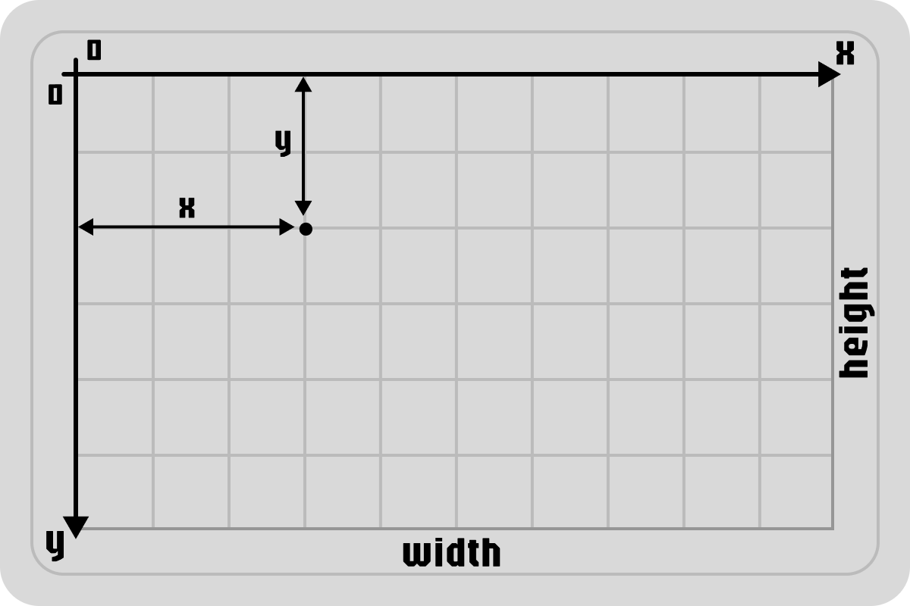
line
const canvas = document.createElement("canvas");
const ctx = canvas.getContext("2d");
ctx.beginPath(); // start a new path
ctx.moveTo(30, 50); // move the pen to (30, 50)
ctx.lineTo(150, 100); // draw a line to (150, 100)
ctx.stroke(); // render the path
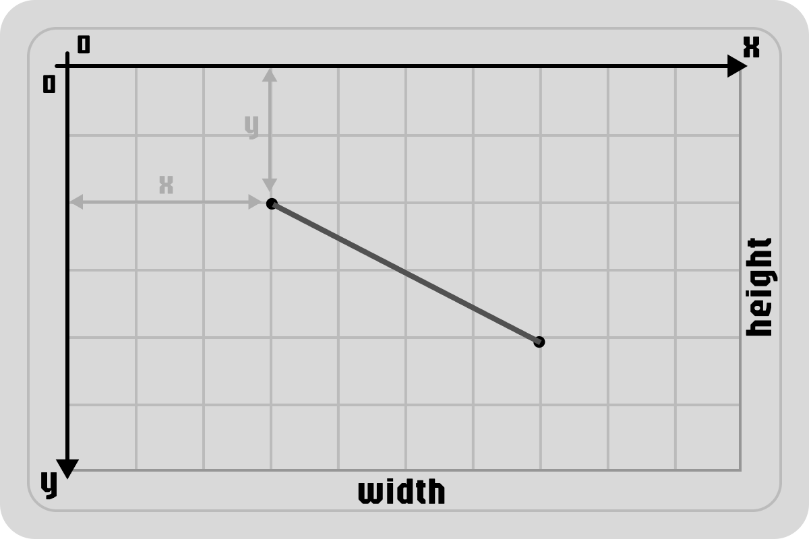
line
const canvas = document.createElement("canvas");
const ctx = canvas.getContext("2d");
ctx.beginPath(); // start a new path
ctx.moveTo(30, 50); // move the pen to (30, 50)
ctx.lineTo(150, 100); // draw a line to (150, 100)
ctx.stroke(); // render the path
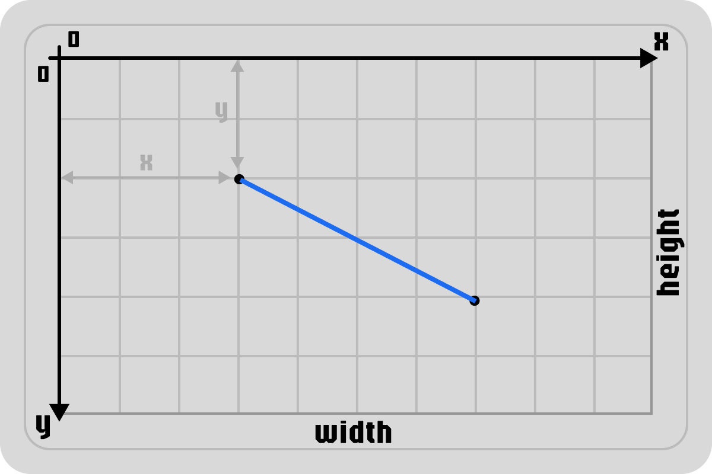
bézier curves
const canvas = document.createElement("canvas");
const ctx = canvas.getContext("2d");
let start = { x: 50, y: 20 };
let cp1 = { x: 230, y: 30 };
let cp2 = { x: 150, y: 80 };
let end = { x: 250, y: 100 };
ctx.beginPath();
ctx.moveTo(start.x, start.y);
ctx.bezierCurveTo(cp1.x, cp1.y, cp2.x, cp2.y, end.x, end.y);
ctx.stroke();
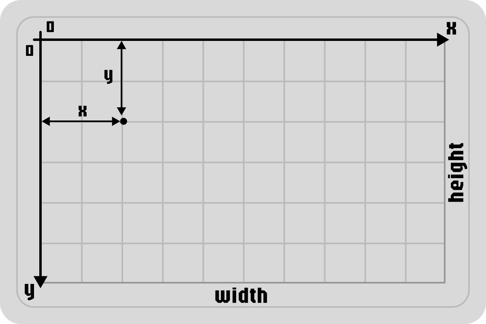
bézier curves
const canvas = document.createElement("canvas");
const ctx = canvas.getContext("2d");
let start = { x: 50, y: 20 };
let cp1 = { x: 230, y: 30 };
let cp2 = { x: 150, y: 80 };
let end = { x: 250, y: 100 };
ctx.beginPath();
ctx.moveTo(start.x, start.y);
ctx.bezierCurveTo(cp1.x, cp1.y, cp2.x, cp2.y, end.x, end.y);
ctx.stroke();
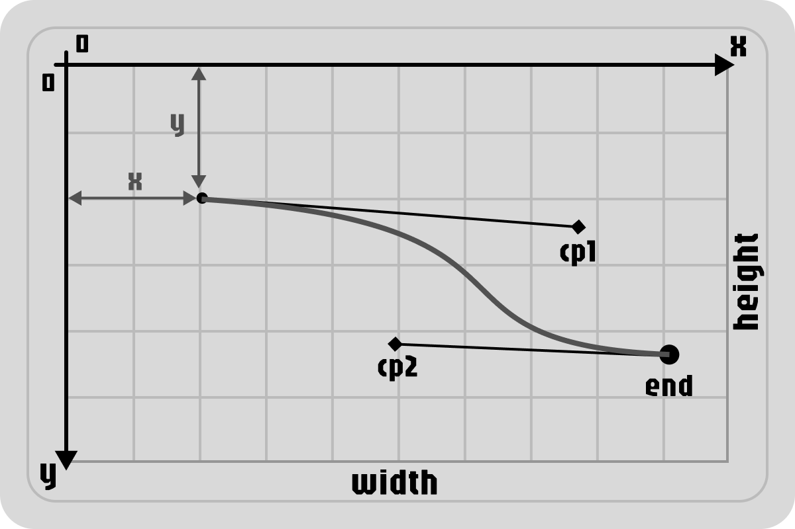
bézier curves
const canvas = document.createElement("canvas");
const ctx = canvas.getContext("2d");
let start = { x: 50, y: 20 };
let cp1 = { x: 230, y: 30 };
let cp2 = { x: 150, y: 80 };
let end = { x: 250, y: 100 };
ctx.beginPath();
ctx.moveTo(start.x, start.y);
ctx.bezierCurveTo(cp1.x, cp1.y, cp2.x, cp2.y, end.x, end.y);
ctx.stroke();

text
const canvas = document.createElement("canvas");
const ctx = canvas.getContext("2d");
ctx.font = "48px serif";
ctx.fillText("HELLO", 10, 50);
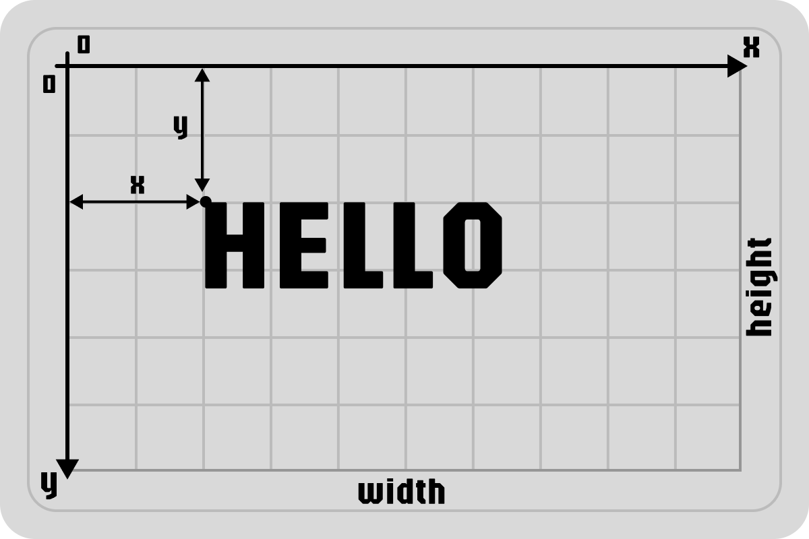
Canvas Rendering Model
The foundation of all Canvas animation
How Drawing Works
- Immediate execution
Draw → Pixels appear immediately - No object retention
Canvas "forgets" shapes after drawing - Pixel persistence
Pixels remain until cleared or painted over
The Animation Implication
- Manual frame management
No built-in animation system - Complete redraw
required
Each frame = clear + redraw everything - 60 FPS loop needed
Constant clearing → updating → drawing
In essence: Canvas doesn't animate objects—it shows a sequence of still images
(frames).
Your job is to generate those frames 60 times per second.
Controlling animation
-
while() -
setTimeout()/setInterval()— time-based, not frame-based -
requestAnimationFrame()— synced with screen refresh rate
requestAnimationFrame
why is this better?
- synchronizes animation with screen refresh (~60 FPS)
- automatically pauses when tab is inactive
- optimized for smooth motion, avoids frame skipping
Modern Animation Loop
let lastTime = 0;
function animate(timestamp) {
// 1. Calculate deltaTime - time since the last frame
const deltaTime = (timestamp - lastTime) / 1000;
lastTime = timestamp;
// 2. Clear (can be partial)
ctx.clearRect(0, 0, canvas.width, canvas.height);
// 3. Update logic based on time
update(deltaTime);
// 4. Draw
draw();
// 5. Request next frame
requestAnimationFrame(animate);
}
requestAnimationFrame(animate);
DeltaTime makes animation frame-rate independent. Movement will be smooth at both 30 FPS and 144 FPS.
Game Loop: The Heartbeat of a Game
A simple pattern that runs 60 times per second
1. Process Input
Check what keys are pressed right now
const keys = {};
window.addEventListener('keydown', e => keys[e.code] = true);
window.addEventListener('keyup', e => keys[e.code] = false);
Simple example:
// Later in our game loop:
let moveLeft = keys['ArrowLeft'];
let moveRight = keys['ArrowRight'];
2. Update Game State (with Time!)
Calculate how much time passed since last frame
let lastTime = 0;
function update(currentTime) {
// Calculate deltaTime (in SECONDS!)
const deltaTime = (currentTime - lastTime) / 1000;
lastTime = currentTime;
// Apply movement based on TIME, not frames
const speed = 300; // pixels per second
if (keys['ArrowLeft']) {
player.x -= speed * deltaTime;
}
if (keys['ArrowRight']) {
player.x += speed * deltaTime;
}
// Update other game objects...
}
Key idea: speed * deltaTime
If 0.016 seconds passed (60 FPS): 300 × 0.016 = 4.8 pixels
If 0.033 seconds passed (30 FPS): 300 × 0.033 = 9.9 pixels
Both give 300 pixels after 1 full second!
3. Render (Draw Everything)
Clear and redraw the entire scene
function render() {
// 1. Clear the entire canvas
ctx.clearRect(0, 0, canvas.width, canvas.height);
// 2. Draw player at its NEW position
ctx.fillStyle = 'blue';
ctx.fillRect(player.x, player.y, 40, 40);
// 3. Draw enemies, background, UI...
}
The complete loop:
function gameLoop(currentTime) {
update(currentTime); // Update positions
render(); // Draw everything
requestAnimationFrame(gameLoop); // Repeat!
}
requestAnimationFrame(gameLoop); // Start the engine!
Game Loop Summary
1. Process Input
What is the player doing?
2. Update
Move objects using deltaTime
3. Render
Draw everything in new positions
4. RepeatrequestAnimationFrame keeps it
running
Conclusion: The Canvas Mindset
Canvas is more than an API — it's a paradigm shift.
You move from declarative DOM to programmatic pixel control.
You orchestrate time through the Game Loop — mastering every frame with `requestAnimationFrame` and `deltaTime`.
The reward? Ultimate creative freedom to build rich, immersive experiences directly in the browser.
You're not just using the browser — you're building its visual engine.